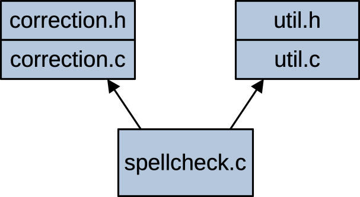
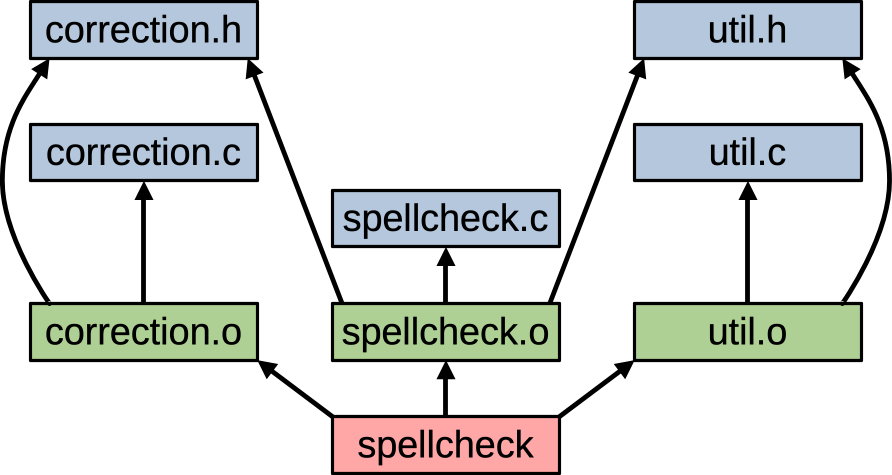

For this assignment, you will be writing a program that can automatically correct spelling mistakes and typos in a plain-text document. The program maintains a correction list, consisting of target words, each with a replacement string. The program corrects mistakes in the document by replacing occurrences of the target words with their replacements.
The program is called spellcheck. It expects an input
that gives the correction list, followed by the text of a document. For
output, the program prints out the document, with every occurrence of a
target word replaced with its corresponding replacement string.
The following shows the input-07.txt file, one of the
sample inputs provided with the starter. This file starts with a list of
five corrections that might need to be applied. For example, the word
“computr” should be replaced by “computer” or the word “ncsu” should be
replaced by “NCSU” (with all the letters capitalized). Here, the
document is just the one line of text at the end, a line of text with
lots of corrections needed.
5
depertment department
computr computer
welcom welcome
sience science
ncsu NCSU
Welcom to the Ncsu Computr Sience DepertmentThe following shows the spellcheck program being run
with this file as input. It replaces each occurrence of one of the
targets with its corresponding replacement, fixing all the errors.
$ ./spellcheck < input-07.txt
Welcome to the NCSU Computer Science DepartmentInstead of giving the list of corrections in the same file as the
document, you can split them into two separate files. This would let you
maintain an extensive list of correction that could be applied to any
text document you want. For example, the starter provides the following
file, clist-a.txt, containing a list of 12 commonly
misspelled words (according to Merriam-Webster).
12
absense absence
accomodate accommodate
basicly basically
brocolli broccoli
cemetary cemetery
comittee committee
concensus consensus
definate definite
mispell misspell
plagarism plagiarism
tommorrow tomorrow
vaccum vacuumThe starter also contains a file, document-09.txt, with
a lot of spelling errors that could be corrected using this list:
Dear Mr. McBean,
It is the concensus of the comittee
that your absense for the last three
months is an abuse of the company
telecommuting policy. We have tried
to accomodate your "eccentric" work
style, but your tendency to mispell
and occasional plagarism make your
work a definate embarrassment to the
company. Tommorrow is basicly your
last chance to demonstrate the good
work we think you're capable of.
Sincerely
Quality Oversight ComitteeThe cat program makes it easy to combine the correction
list and the document as input for our spellcheck program.
It can be used to concatenate any files you list as command-line
arguments, sending the concatenated output to standard out. With a pipe
(vertical bar), we can get the shell to send the output of
cat as input to spellcheck. That’s what a pipe
does, it sends the standard output from one program as standard input to
the next program. So, the following shell syntax will let us combine
clist-a.txt and document-09.txt right before
running spellcheck and then see the spell-corrected output
on the terminal.
$ cat clist-a.txt document-09.txt | ./spellcheck
Dear Mr. McBean,
It is the consensus of the committee
that your absence for the last three
months is an abuse of the company
telecommuting policy. We have tried
to accommodate your "eccentric" work
style, but your tendency to misspell
and occasional plagiarism make your
work a definite embarrassment to the
company. Tomorrow is basically your
last chance to demonstrate the good
work we think you're capable of.
Sincerely
Quality Oversight CommitteeTo help get you started with this assignment, we’re providing you with an automated system test script, a unit test program for one of your components, and several test inputs and expected outputs. There are also some starter source files with some includes and preprocessor constants. See the Getting Started section for instructions on how to set up your development environment so that you can be sure to submit everything needed when you’re done.
This homework supports a number of our course objectives. See the Learning Outcomes section for a list.
You get to complete this assignment individually. If you’re unsure what’s permitted, you can have a look at the academic integrity guidelines in the course syllabus.
You should be able to complete this assignment using material covered in the lecture slides up to lecture 07. In particular, you’ll need the material from lecture 6 for working with arrays and strings, and you’ll need the lecture 7 material on 2D arrays and build automation. Please don’t go find other resources for implementing your solution. This will help you to practice using the C language and library features we’ve covered up to this point in the class.
All code submitted for this assignment should be from the starter or written by you for this course. You are not permitted to use code that has been generated or obtained from sources other than course materials (class slides, the textbook, posted class examples), even if you modify this code before turning it in. In the design section, you’ll see some instructions for how your implementation is expected to work. Be sure you follow these rules. It’s not enough to just turn in a working program; your program needs to follow the design constraints we’ve asked you to follow.
Requirements are a way of describing what a program is supposed to be able to do. In software development, writing down and discussing requirements is a way for developers and customers to agree on the details of a system’s capabilities, often before coding has even begun. Here, we’re trying to demonstrate good software development practice by writing down requirements for our program, before we start talking about how we’re going to implement it.
The functional requirements for the program are accompanied by more detailed specifications for exactly what the program’s input and output should be like and how it should behave for valid and invalid input. These details will help you to implement your program so it behaves exactly like we’re expecting. This will be important in grading your work.
This program only has one functional requirement. It is summarized in FR-1 below, but the following subsections specify many details that are needed in order to implement this requirement correctly.
FR-1 : Given a correction list followed by a
document on standard input, the spellcheck program will
print to standard output a copy of the document, with every occurrence
of a target word replaced with its corresponding replacement string.
The output of the spellcheck program is called the
corrected document, with occurrences of target strings replaced
by their corresponding replacement strings.
The correction list will start with an integer, n. This will be followed by a sequence of n pairs of words, each consisting of a target string followed by a corresponding replacement string. There can be any amount of whitespace before and after the value n or between target and replacement strings. Target and replacement strings will normally be given one pair per input line, but permitting arbitrary whitespace in the correction list should make it easier to parse.
So, the correction list could be given with one pair of words per line, like the following:
2
thier their
wierd weirdOr, the following would be an equivalent way of given the same list, with different amounts of whitespace around the number n and between the words:
2
thier
their wierd
weirdTarget and replacement strings must be between 1 and 20 characters long. A target string can consist of only lower-case letters and apostrophes (ASCII code 39). A replacement string can consist of lower-case letters, capital letters or apostrophes. The correction list can consist of up to 50,000 target / replacement pairs. All target strings in the correction list must be unique; there can’t be any duplicate targets.
If the given correction list doesn’t satisfy all these constraints,
the spellcheck program should terminate with an exit status
of 100. This exit status indicates that the correction list was bad.
The input document is given on standard input, starting on the next line after the last replacement string in the correction list. For example, the document would start at “This is the start …” in the following input.
2
thier their
wierd weird
This is the start of the document.The following correction list has some extra spaces, but the document would still start at the beginning of the line: “This is the start …”. There could even be some extra whitespace after the word “weird” on the 5th line.
2
thier
their
wierd
weird
This is the start of the document.The document can contain an arbitrary number of lines (even zero).
Any individual line of the input document must be no longer than 80
characters. This doesn’t include the newline at the end or a null
terminator that may be used internally to store the line as a string. If
the input document has a line that’s longer than 80 characters, the
spellcheck program should terminate immediately with an
exit status of 101. This exit status indicates that the input document
was bad.
It’s possible that the program will print some output before encountering an input line that’s too long. This is OK. It is sufficient to exit with the appropriate exit status, and any incomplete output of the corrected document won’t be considered in evaluating the program.
A word in the input document is a sequence of characters consisting of letters (capital or lower-case) and apostrophes. To match a target word in the correction list, a word in the document must be maximal; it can’t be a substring of a longer word in the document. So, for example, the target “thier” could match a word in a document like:
When thier name was called, they knew they were in trouble.but, it wouldn’t match a word in a line of a document like:
They were considered the clothier to the rich and famous.Matching words from the document with target strings is
case-insensitive. So, if thier is a target string on the
correction list, it could match the word “thier”, “Thier”, “THIER” or
“ThiER” in the document.
If a word in the document matches a target string, it will be replaced by the replacement string in the output. Other parts of the document, including other words, spacing and non-word characters will remain exactly the same.
Each Word in the document will be replaced at most once. It’s possible for a word to match a target string even after it is replaced. For example, this happens in the example at the start of the assignment. The word “Ncsu” matches the target, “ncsu”, so it is replaced by “NCSU”. The new word “NCSU” still matches the “ncsu” target, but it should not be replaced again; that would just cause an infinite loop, replacing the same word over and over.
If a word from the document has a capital letter as its first character, we say the word is capitalized. It doesn’t matter whether remaining characters in the word are capital letters; capitalization only depends on the first character. When a capitalized word in the document matches a target string from the correction list, it is replaced with a capitalized version of the replacement string, with the first character capitalized (if it’s a letter) and all remaining characters identical to the replacement string.
So, for example, if the correction list contains the target / replacement pair, “teh” / “the”, then an occurrence of the word “Teh” in the document will be replaced by “The”. An occurrence of the word “TEH” would be replaced by “The”, and an occurrence of the word “teh” would be replaced by “the”.
Other than capitalization of the of the first character, remaining characters of the replacement string are never changed during replacement. So, for example, if the correction list contains the target / replacement pair, “nsaa” / “NASA”, then an occurrence of “Nsaa” or “NSAA” or “nsaa” in the document would be replaced by “NASA”.
The spellcheck program should output the corrected
document to standard output. No output line should be longer than 80
characters. If a line of the document is longer than 80 characters after
performing all replacements, the program should terminate immediately
with an exit status of 102. This exit status indicates that there was a
problem with the corrected document.
As with invalid input lines, it’s possible that the program will print some output before encountering an output line that’s too long. This is OK. It is sufficient to exit with the appropriate exit status, and any incomplete output of the corrected document won’t be considered in evaluating the program.
This assignment has a couple of non-functional requirements related to performance. To receive full credit, the solution doesn’t need to be too fast.
NFR-1 : The spellcheck program must be
able to process a document of 10,000 lines with a 50,000-element
correction list in less than one minute.
The starter includes a test input of the size described above. We’ll try this out on a system similar to the pool of Linux machines at remote.eos.ncsu.edu. Your implementation shouldn’t need to be too clever to achieve this level of performance.
For up to 5 points of extra credit, you can satisfy the following performance requirement instead.
NFR-2 : The spellcheck program must be
able to process a document of 10,000 lines with a 50,000-element
correction list in less than half a second.
The following figure shows the three components that will be used to
implement this program. Each component consists of an implementation
file (.c) and a header file (.h), except for the main component,
spellcheck.c which doesn’t need a header.

The following list briefly describes what each component is responsible for.
util.h / util.c
This component provides some basic functions for inserting and removing
substrings from a line of text. After finding an occurrence of a target
word, these functions will make it easy to remove the word and insert
the replacement word in its place.
correction.h / correction.c
This component maintains the list of corrections read in at program
start-up. It provides functions for reading in the list and looking up
target/replacement pairs that match a word from the document.
spellcheck.c
This is the top-level component, containing the main() function and
supporting code and functions to read in the document, find words in
each line, check each word to see if it’s the target of a correction and
replace the word if it is.
The dependency figure above shows how the code is organized. You can
see we’ve tried to make sure this is a layered design. The
util and correction components are low-level.
They can use standard C library features, but they don’t need code
implemented in other parts of the assignment. The top-level
spellcheck component can use the other two components to
help find and apply corrections to words in the document.
The correction list will be stored using static global variables in
the correction component. You can decide how you want to
represent this list, and it’s OK if you want to use more than one static
global variable.
Storing the list using static, global variables will let any code in
the component access the representation, but other components won’t be
able to access it directly. Code outside the component will need to use
the functions provided by correction.c to read in and
lookup words in the list.
You can use as many functions as you want to solve this problem, but
you’ll need to implement and use a few specific functions that we’re
asking you to write. For the util component in particular,
organizing your code into the functions we’re asking for will help you
to test your code early with the help of a provided, unit test
driver.
The util.c component contains functions for basic string
operations. It should have at least the following functions:
void removeSubstr( char str[], int pos, int len )
This function modifies the string, str, by removing the
substring of length len starting at index pos.
For example, if str is the string “refused”, then
removeSubstr( str, 2, 4 ) should leave the string “red” in
`str’. The caller is responsible for making sure the parameters are
valid, that the given substring doesn’t extend past the end of str. The
function isn’t expected to check this, so behavior is undefined if the
caller uses the function with invalid parameters.
void insertSubstr( char str[], int pos, char const substr[] )
This function modifies the string, str, by inserting the
given string, substr starting at index, pos.
For example, if str is the string “grass” and
substr is the string “shopper”, then
insertSubstr( str, 4, substr ) will leave the string
“grasshoppers” in str. The given position,
pos, can be any value between zero (to insert at the start)
and the length of str (to insert at the end). The caller is
responsible for making sure this function is called with valid
parameters. In particular, the caller must ensure that the
str array is large enough to hold the resulting string.
Behavior is undefined if the function is called with invalid
parameters.
The correction.c component contains functions for
reading and using the correction list. It should contain at least the
following functions:
void readCorrections()
This function reads the correction list from standard input and stores
it in static global variables for future use by the
findCorrection() function. It should read the rest of the
input line containing the last replacement string (including the newline
character), so standard input will be right at the start of the document
when the function returns.
bool findCorrection( char const target[ WORD_LIMIT + 1 ], char replacement[ WORD_LIMIT + 1 ] )
This function looks for the given target in the correction
list. If the target word is found, the function sets
replacement to the corresponding replacement word and
returns true. If the given target isn’t on the list, it returns
false.
You will want to consider defining some more functions, in addition to those described above. This can help you to organize your code and avoid duplication. It can also help you to test your code in smaller pieces.
If you define your own functions, be sure to consider the right
component to put them in. The util component is for general
functions that work with strings, the correction component
is for working with the correction list and the top-level component is
for code that’s specific to this particular application (i.e., code
that’s less likely to be reusable in another application). Also, be sure
to consider if a function you define is for internal use only by its
component, or if it’s for use by other components. Mark a function as
static and don’t put a prototype in the header if it’s for internal use
by just one component. If the function should be made available to other
components, don’t mark it as static, and be sure to put its prototype
and documentation comment in the header.
The only globals you’ll need are the static global variables used to
store the correction list inside the correction component.
For other parts of the application, the parameters passed to each
function should give the function everything it needs to do its job.
Be sure to avoid magic numbers in your source code. The starter comes with some constants already defined for you. Use these and define additional preprocessor constants as needed to give meaningful names to all the important, non-obvious values used within the program.
As described in the style guide, values used to check the return value of calls to scanf() are not considered magic numbers. For example, the value 3 used below is specific to the format string being used on the very same line of code. It probably wouldn’t be meaningful or helpful to give a name for this value and define it elsewhere in the code.
if ( scanf( "%d%f%c", &a, &b, &c ) == 3 ) {
...
}You get to implement your own Makefile for this assignment. We’re expecting it to be called “Makefile”, with a capital M at the start and no filename extension at the end.
Your Makefile should be smart enough to separately create each of the
object files needed by your program. It should have a separate rule to
create an object file by compiling the corresponding implementation
file. It will also have a rule to build the executable by linking
together the object files. When it’s creating an object file, your
Makefile should use the usual compile-time flags, -Wall, -std=c99, and
-g. When you’re linking, you will need to use the -o flag to specify the
name of the executable you want to create. You won’t need any other
flags for the linker. For example, you won’t need the -lm
flag since we won’t be using the math library for this assignment.
From class, you’ll remember that make includes default rules for
building common types of targets. You can use these built-in rules for
the compile steps if you want. If you do use the built-in rules, be sure
to set up variables like CFLAGS so your code compiles with
the options we need.
The Makefile should also have a rule with the word clean
as the target. This will let the user easily delete any temporary files
that aren’t really part of the project or can be rebuilt the next time
make is run (e.g., the object files, executables and any temporary
output files). A clean rule is a convenient way to delete temporary
files, if, for example, you move your source code to a different
operating system and need to rebuild everything without trying to use
old executables or object files.
A clean rule can look like the following. It doesn’t have any prerequisites, so it’s only run when it’s explicitly specified on the command-line as a target. It doesn’t actually build anything; it just runs a sequence of shell commands to clean up the project workspace. In the example below, we used the <tab> notation to remind you where the hard tabs need to go in a Makefile. Don’t actually put <tab>; use a real tab character instead. You can see that this rule runs commands to delete temporary files from the project workspace directory. In your clean rule, replace things like all-your-object-files with a list of the object files that get built as part of your project.
clean:
<tab> rm -f all-your-object-files
<tab> rm -f your-executable-programs
<tab> rm -f any-temporary-output-files
<tab> rm -f anything-else-that-doesn't-need-to-go-in-your-repoTo use your clean target, type the following at the
command line, but first be sure you have committed all of
the files that you need to your github repo. If you make a
mistake in this rule, you could accidentally delete some of your files.
Committing them to your repo first can help make sure you don’t lose
anything important. You can always recover your files from your
repository if something goes wrong.
$ make cleanYour Makefile should correctly describe the source file dependencies,
so targets can be rebuilt selectively, based on what source files have
changed since the last build. The following figure tries to show how the
various files in your project depend on each other. For example,
util.c includes util.h, so, if either of these
files is changed, the object file, util.o, will need to be
rebuilt. The top-level source file, spellcheck.c includes
both headers, util.h and correction.h, so
spellcheck.o will need to be rebuilt if any of these three
source files changes.

The arrows show where one file depends on another. The blue files are source files and the green ones are objects generated by make. The red file is the executable target, created by linking together the object files.
If none of the targets have been built (e.g., if you just ran make
clean), then your Makefile will have to rebuild all the targets. Running
make should produce output like the following. The order of
the compile steps may be different, but you should see each of your
implementation files being compiled to an object file, then you should
see a gcc command for linking your object files into an
executable.
$ make
gcc -Wall -std=c99 -g -c -o spellcheck.o spellcheck.c
gcc -Wall -std=c99 -g -c -o correction.o correction.c
gcc -Wall -std=c99 -g -c -o util.o util.c
gcc spellcheck.o correction.o util.o -o spellcheckAfter building your objects and executable once, make should be smart enough to avoid unnecessary steps on subsequent builds. If you try to run make again without changing anything, it should tell you there’s nothing to rebuild:
$ make
make: 'spellcheck' is up to date.If you modify just some of your source files, the dependencies in
your Makefile should let make figure out what targets need to be
rebuilt. For example, if you change just the spellcheck.c
source file and then run make, only the object file
spellcheck.o and the executable, spellcheck
need to be rebuilt. From the figure above, you can see that these are
the only files that depend on this source file. You can try this out by
making a small edit to your spellcheck.c file then saving
it, or you can use the touch command to make the computer
think the file has been modified without having to actually edit it.
$ make
gcc -Wall -std=c99 -g -c -o spellcheck.o spellcheck.c
gcc spellcheck.o correction.o util.o -o spellcheckHowever, if you change the header file, util.h, make
will have to rebuild the two object files util.o and
spellcheck.o. The implementation files for both of these
components include the util.h header. After rebuilding
these two objects, it will have to link all the objects into an
executable:
$ make
gcc -Wall -std=c99 -g -c -o spellcheck.o spellcheck.c
gcc -Wall -std=c99 -g -c -o util.o util.c
gcc spellcheck.o correction.o util.o -o spellcheckThe starter includes a unit test program to test the
util component. It also includes an automated system test
script to help you check the correctness of your completed program. When
we’re grading your work, we will use the same test cases used by the
system test script, along with a few other test inputs that aren’t being
provided with the starter.
The utilTest.c source file is a small unit test for the
util component. It calls each of the functions in
util.c a few times, with different parameter values,
checking the results to make sure they look right.
The unit test program won’t be used for grading, but it should be
helpful to you as you start developing your program. You can implement
your util component first, using the provided unit test to
help make sure your basic string functions are doing what’s expected. If
you want, you can add more test cases to the unit test program, to help
you debug or to check your string functions with different
parameters.
Your Makefile isn’t expected to build the unit test program
automatically. It’s fine if you want to add a rule for this, but be sure
that the default target for your Makefile is the spellcheck
program. To build the unit test program, you can compile it from the
command line using the following command:
$ gcc -Wall -std=c99 -g utilTest.c util.c -o utilTestThen, you can run it by running the utilTest executable.
It will try out each of the test cases, and, at the end, it will report
how many passed. If you’re passing all the unit tests, this should look
like:
$ ./utilTest
Passed 8 of 8 unit testsIf your program fails a unit test, you will get a report of which one
failed. You can look at the code for the failing test, run the test
program in gdb and try to fix what’s going wrong.
$ ./utilTest
Failed test: removeSubstr test 2
Passed 7 of 8 unit testsTo run the automated system test, you should be able to enter the
following commands. The chmod command sets the script to be
executable; you probably just need to do this once for the first time
you run it, and you shouldn’t need it at all if you’re working in your
NCSU Drive space on a common platform system.
$ chmod +x stest.sh # probably just need to do this once
$ ./stest.shThe system test script will try to build your program using your Makefile. Then, it will see how it behaves on all the provided test inputs. These are described briefly below. The test script is what’s called a shell script. It contains the same kinds of commands you type at the terminal when you’re working on a Unix machine.
You probably won’t pass all the system tests the first time. In fact, until you have a working Makefile, you won’t be able to use the test script at all.
If you want to compile your program by hand, the following command
should do the job. Here, we’re compiling and linking the three source
files into an executable named spellcheck. Your Makefile
should be smarter than this, compiling each source file individually and
then linking all the resulting objects together, rather than compiling
and linking everything all at once.
$ gcc -Wall -std=c99 -g util.c correction.c spellcheck.c -o spellcheckWhen you run the system test script, it prints out how it’s running your program for each test case, along with the commands it uses to check your output. This should make it easy to check on individual test cases you’re having trouble with. For the smaller test inputs, the correction list and the document are already combined into a single input file. For these, you should be able to run your program as follows to see how it handles the test case:
$ ./spellcheck < input-06.txt > output.txt
$ echo $?
0
$ diff output.txt expected-06.txt The commands above run the program with input from
input-06.txt and with output written to the file,
output.txt. Then, we check the exit status to make sure the
program exited successfully (it should for this particular test case).
Finally, we use diff to make sure the output we got looks exactly like
the expected output for test case 06.
Keep in mind that you don’t always need to send your program’s output to a file. If you’re debugging or running it in gdb, it might be easier to let your output go to the screen. This wll let you see what your program is printing as soon as it prints it. Also, remember that terminal output may be buffered in memory before it goes to the screen. Normally, a line of output is stored temporarily and only printed to the screen when a newline character is printed. Keep this in mind if you’re adding debug output to your program. If you forget to put a newline at the end, your output may not show up until later.
If a test case uses separate correction list and document input
files, you can run them as follows, using cat to combine
the two input files then sending the combined input to the
spellcheck program via a pipe. The following example shows
how to run test 09 like this:
$ cat clist-a.txt document-09.txt | ./spellcheck > output.txt
$ echo $?
0
$ diff output.txt expected-09.txtIf you want to run a test like this, with two input files, from gdb, you will probably want to combine the inputs into one file, to make it easier to read from gdb. To do this, you can concatenate the correction list and the document input into a single temporary file, using a command like the following:
$ cat clist-a.txt document-09.txt > input.txtThen, when you run your program in gdb, you can tell it to read all its input from the combined input file you just created, something like this:
$ gdb ./spellcheck
... gdb welcome message ...
(gdb) ... set breakpoints as needed ...
(gdb) run < input.txtFor system tests that exit unsuccessfully, we only expect your program to generate the appropriate exit status. We don’t check your partial output. If you want to try out a test like this, you should be able to run it like the following. Test 17 has a bad correction list, so it should fail with an exit status of 100:
$ ./spellcheck < input-17.txt
$ echo $?
100For the smaller test cases, the correction list and the document are already combined into one input file. This simplifies the commands for running the program and makes it easier to debug. For most of the larger test cases, we use separate files for the correction list and the document. The following correction lists are used for some of these larger test cases:
clist-a.txt is a list of 12 common misspellings
obtained from Merriam-Webster.
clist-b.txt is a list of about 4000 corrections,
obtained from Wikipedia)
We’ve prepared several test cases to help you make sure your program is working right. Most of these are valid inputs, where your program should exit successfully and print the document with all substitutions applied. A few test cases at the end check for correct handling of errors in the inputs.
This is a small test input, with an empty correction list and a one-line document.
This test has one word on the correction list, followed by a document that contains just that one word.
This test has two words on the correction list. The document contains one of them.
This test has a correction list with 5 words and a multi-line document with some words at the start and end of lines that require replacement.
This test has some target words on the correction list that show up inside words of the document. These occurrences shouldn’t be replaced.
The document contains some copies of target words right next to punctuation characters.
This document has some capitalized copies of the target words. They should be replaced with capitalized versions of the replacement string.
This input has some extra whitespace in the correction list.
This is the example from the start of the assignment. It uses a
separate correction list (clist-a.txt) and document that
get concatenated when the test is run.
This test uses a document like the one from test 09, but it uses
the clist-b.txt as the correction list and the document has
a lot more misspellings.
This test uses clist-b.txt as the correction list
and a version of Mark Antony’s speech from Julius Caesar as the
document.
This test uses clist-b.txt as the correction list
and a version of the Gettysburg Address as the document, with spaces
replaced by non-word characters.
The document in this test contains a word longer than 20 characters. This is OK, but a word like this could never match a target string.
The document has a line that’s exactly 80 characters long.
The document has a line that could be temporarily longer than 80 characters while corrections are being applied, but it will be no longer than 80 characters by the time all replacements have been made.
This is a large test case with 50,000 randomly-generated words on the correction list and a document with 10,000 lines.
This is a test for error handling. The correction list has a target word that’s too long.
This is a test for error handling. There are too many words on the correction list.
This is a test for error handling. There’s a target string containing an invalid character.
This is a test for error handling. One of the lines in the input document is too long.
This is a test for error handling. One of the output lines ends up being too long after replacement.
The starter includes one large test case for checking the performance
of your solution. The file input-16.txt has a correction
list with 50,000 entries and a 10,000-line document. For regular credit,
your solution should be able to handle this input in less than a minute.
For the extra credit, it should take your program less than half a
second. You can use the time command to see how long your program takes.
Below, I’m sending program output to /dev/null. This simply
discards all the output. Performance like the following could get you
full credit:
$ time ./spellcheck < input-16.txt > /dev/null
real 0m42.415s
user 0m41.769s
sys 0m0.006sIf you did the extra credit, you should expect performance more like the following:
$ time ./spellcheck < input-16.txt > /dev/null
real 0m0.126s
user 0m0.093s
sys 0m0.008sThe grade for your program will depend mostly on how well it functions. We’ll also expect it to have a working Makefile, to compile cleanly, to follow the style guide and to follow the design given for the program.
To get started on this assignment, you’ll need to clone your assigned CSC 230 repo and unpack the given starter into the hw2 directory. You’ll submit by committing files to your repo and pushing the changes back up to the NCSU github.
Homework 1 has instructions for cloning your CSC 230 git repository. Probably, you already have a local copy of your repo left over from from the previous assignment. If not, you can look back at homework 1 to see how to set up your github credentials and clone your repo.
You will need to copy and unpack the homework 2 starter. We’re
providing this file as a compressed tar archive, starter2.tgz. You can get a copy of the starter
by using the link in this document. Temporarily, put your copy of the
starter in the hw2 directory of your cloned repo. Then, you
should be able to unpack it with the following command:
$ tar xzvpf starter2.tgzOnce you start working on the assignment, be sure you don’t
accidentally commit the starter archive to your repo (that would be an
example of an extraneous file that doesn’t need to be there). After
you’ve successfully unpacked it, you may want to delete the starter from
your hw2 directory, or move it out of your repo.
$ rm starter2.tgzOr, if you’re working on one of the EOS Linux machines, instead of
copying the starter file to your working directory, you can unpack it
from a shared copy that’s available on these systems. You should be able
to change directory to hw2 in your cloned repo and run the
following command:
$ tar xzvpf /mnt/coe/workspace/csc/CSC230/hw/hw2/starter2.tgzIf you’ve set up your repository properly, pushing your changes to your assigned CSC 230 repository should be all that’s required for submission. When you’re done, we’re expecting your repo to contain the following files. You can use the web interface on github.com to confirm that the right versions of all your files made it.
spellcheck.c : Top-level component for your
program.correction.c / correction.h : Implementation and header
file for the component that maintains the correction list.util.c / util.h : Implementation and header file for
the component performs string functions used by the main component.utilTest.c : Unit test program for the functions
implemented in the util component.input-*.txt : Input files for most of the system
test.clist-*.txt : These are the correction lists for the
system tests that use a separate correction list and document.document-*.txt : These are the document files for the
system tests that use a separate correction list and document.expected-*.txt : These are the expected output files
for system tests that run successfully.Makefile : Makefile for building your program.stest.sh : System test script, provided with the
starter..gitignore : a file for this assignment, telling git
some files to not commit to the repo.You’ll need to add the files list above to the local copy of your repo. As you make progress on your solution, be sure to commit your changes and push them up to your remote repo at github.com. For grading, we’ll grade the last copy you push before the late deadline.
Be careful not to commit files that don’t need to be part of your repo. Temporary files or files that can be easily re-generated will just take up space and obscure what’s really changing as you modify your source code. And, the NCSU github site puts a file size limit on what you can push to your repo. Adding files you don’t really need could create a problem for you later.
The .gitignore file helps with this, but it’s always a
good idea to check with git status before you commit, to
make sure you’re getting what you expect.
I’m expecting we will have Jenkins jobs to help you test your code. I still need to figure out some things about how our these jobs will work, now that we no longer have github.ncsu.edu. The following are our old instructions for accessing Jenkins. I’ll update these once I figue out how the jobs will work this semester.
We have created a Jenkins build job for your project. it’s only available from on campus, so if you want to check your Jenkins results from off-campus, you’ll need to VPN into a campus address first. If you’ve never used VPN before, you’ll find instructions for setting it up and connecting at:https://oit.ncsu.edu/campus-it/campus-data-network/vpn/.
Follow the instructions for your type of system and get connected to the campus network. It will take a little bit of work to get this configured, but it will pay off in later classes if you already know how to use VPN. If you’ve been accessing your NCSU Drive file space from your laptop, then you’ve probably already gone through the work of configuring VPN for your system.
Jenkins is a continuous integration server that is used by industry to automatically build and test applications as they are being developed. We’ll be doing the same thing with your assignment as you push changes to the NCSU github. This will provide early feedback on the quality of your work and your progress toward completing the assignment.
The Jenkins job associated with your GitHub repository will receive notification from GitHub every time you push changes to your repo. After a change, jenkins will automatically start a build process on your code. The following actions will occur:
Code will be pulled from your GitHub repository.
A testing script will be run to make sure you submitted all of the required files, to check your code against parts of the course style guidelines and to try out your solution on the system test script.
The system test script doesn’t execute test 16. This test takes a while, depending on whether or not you did the extra credit. We’ll try out this test when we’re grading submissions, but this one test is disabled for Jenkins jobs.
Jenkins jobs try out your Makefile to see if it builds your job using separate compile and link steps, and they try simulating a few changes to your source code to see if your Makefile knows how to rebuild just the parts of the project that need rebuilding.
Jenkins will record the results of each execution. To obtain your Jenkins feedback, do the following tasks (remember, after a push, you may have to wait a couple of minutes for the latest results to appear):
Go to Jenkins for CSC230. Your web browser will probably complain that this site doesn’t have a valid certificate. That’s OK. Tell your browser to make an exception for this site and it should let you continue to the site.
You’ll need to authenticate with your unity ID and password.
Click the project named hw2-unityid.
There will be a table called Build History in the lower left, click the link for the latest build.
Click the Console Output link in the left menu (4th item).
The console output provides the feedback from compiling your program and executing the provided test cases. If the bottom of the output says you failed some tests, there should be one or more lines earlier in the output that starts with four stars. These should say something about what parts of the test your program failed on.
Be sure to follow the style guidelines and make sure your program compiles cleanly on the common platform with the required compile options. If you have your program producing the right output, it should be easy to clean up little problems with style or warnings from the compiler.
Be sure your files are named correctly, including capitalization. We’ll have to charge you a few points if you submit something with the wrong name, and we have to rename it to evaluate your work.
We’ll test your submission with a few extra test cases when we’re grading it. Maybe try to think about sneaky test cases we might try, like behaviors that are described in this write-up but not actually tested in any of the provided test cases. You might be able to write up a simple test case to try these out yourself.
There is a 48 hour window for late submissions. If you submit late up to 24 hours after the due date, you will receive a 10% penalty. If you submit 25-48 hours late, you will receive a 20% penalty. Use this if you need to, but try to keep all your points if you can. Getting started early can help you avoid this penalty.
The syllabus lists a number of learning outcomes for this course. This assignment is intended to support several of theses:
Compilation: implement C programs using the C standard library, with separately-compiled modules; explain the steps of compilation; identify and fix errors that happen during compilation and execution.
Language: write, debug, and modify C programs using data types, control structures, operators, library utilities, and variables, including scope in a single function, across multiple functions, and across multiple modules.
Memory and Representation: use functions and basic data structures involving arrays, structs, pointers, and function pointers; allocate and deallocate memory in C programs while avoiding memory leaks and dangling pointers.
Tools: utilize software development tools to implement, test, build, and trace C programs including, build automation, version control, static analysis, and dynamic analysis tools.
Security: describe and demonstrate how to avoid common programming errors that lead to security vulnerabilities, such as buffer overflows and injection attacks; describe security properties provided by cryptographic primitives (e.g., symmetric cryptography, asymmetric cryptography, and cryptographic hash functions).